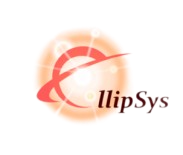

{openAudit} permet de migrer SAP BO au forfait vers Power BI ou Looker !
Ellipsys est maintenant membre de l'UGAP - les collaborations avec les acteurs publics français sont facilitées.
Ellipsys exposait au salon Big Data et AI Paris 2023 les 25 et 26 septembre 2023, pour présenter les nouvelles fonctionnalités de {openAudit}.
Nouvelle 4 : NEWS ICI ICI!
Nouvelle 5 : NEWS ICI ICI!
{openAudit} permet de migrer SAP BO au forfait vers Power BI ou Looker !
Ellipsys est maintenant membre de l'UGAP - les collaborations avec les acteurs publics français sont facilitées.
Ellipsys exposait au salon Big Data et AI Paris 2023 les 25 et 26 septembre 2023, pour présenter les nouvelles fonctionnalités de {openAudit}.
Nouvelle 4 : NEWS ICI ICI!
Nouvelle 5 : NEWS ICI ICI!

Cas d'usages
A propos
Contact
Blog
Blog
Switch d'environnements #1 - Comparer les environnements
Switch d'environnements #2 - Supprimer les tables inutiles
Switch d'environnements #3 - Les impacts d'une régression
Migrations massives et automatisées, d'outils de dataviz
Sourcer des données dans une solution de dataviz
Migration automatique de SAP BO vers une solution tierce
FinOps : réduire les coûts du Cloud en supprimant les "branches mortes" !